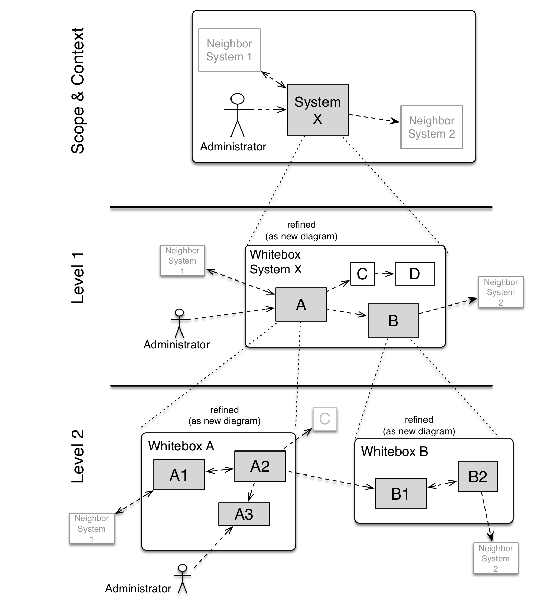

Building Block View¶
Meta¶
Content
The building block view shows the static decomposition of the system into building blocks (modules, components, subsystems, classes, interfaces, packages, libraries, frameworks, layers, partitions, tiers, functions, macros, operations, data structures, …) as well as their dependencies (relationships, associations, …)
This view is mandatory for every architecture documentation. In analogy to a house this is the floor plan.
Motivation
Maintain an overview of your source code by making its structure understandable through abstraction.
This allows you to communicate with your stakeholder on an abstract level without disclosing implementation details.
Form
The building block view is a hierarchical collection of black boxes and white boxes (see figure below) and their descriptions.
Level 1 is the white box description of the overall system together with black box descriptions of all contained building blocks.
Level 2 zooms into some building blocks of level 1. Thus it contains the white box description of selected building blocks of level 1, together with black box descriptions of their internal building blocks.
Level 3 zooms into selected building blocks of level 2, and so on.
See Building Block View in the arc42 documentation.